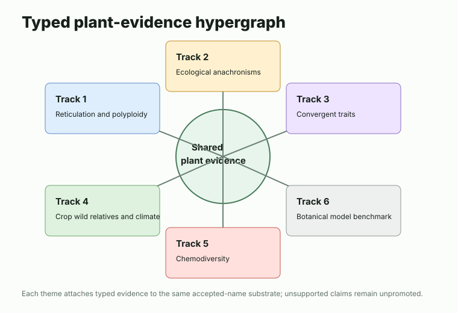
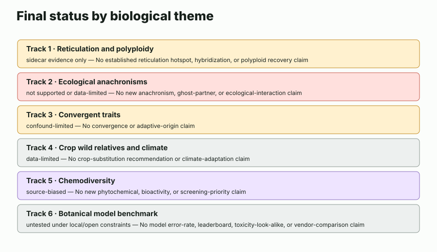
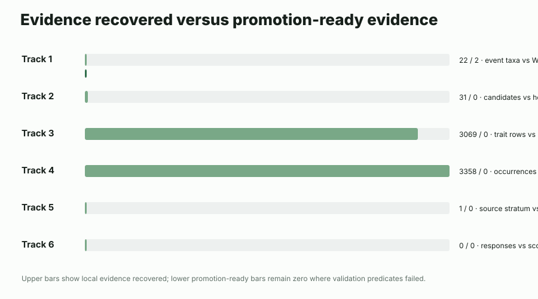
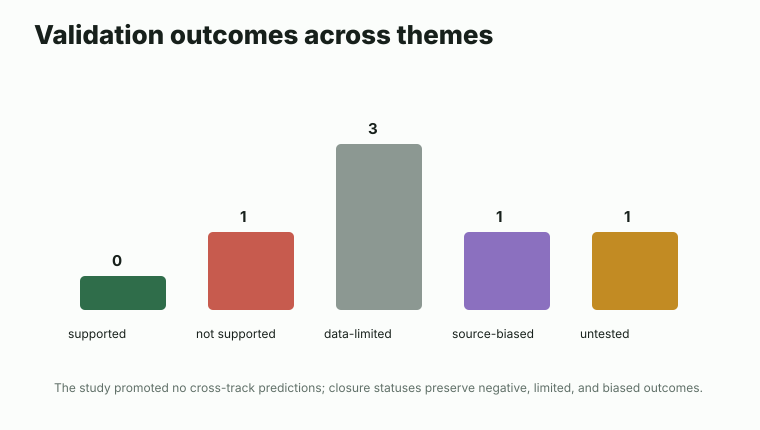
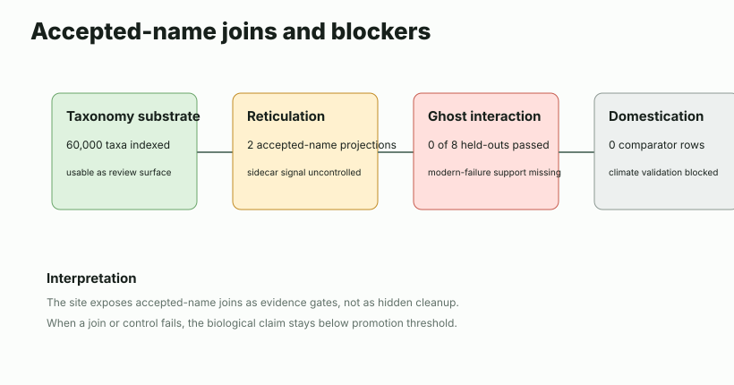
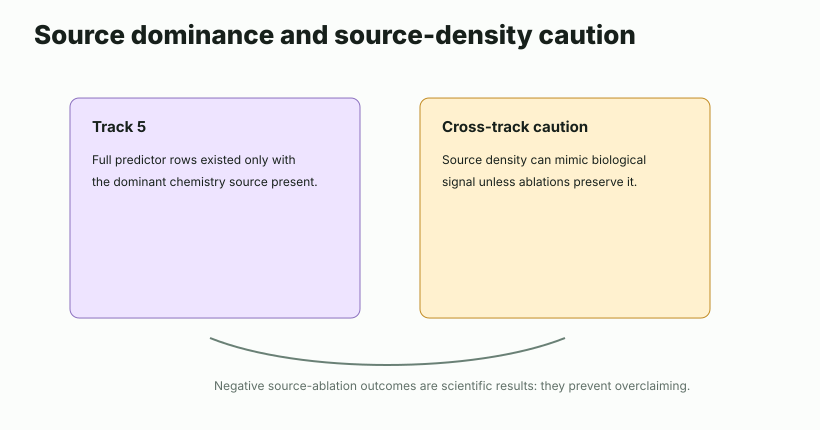
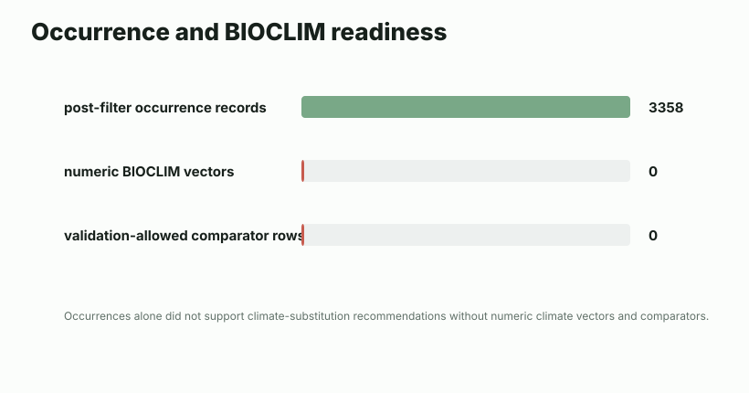
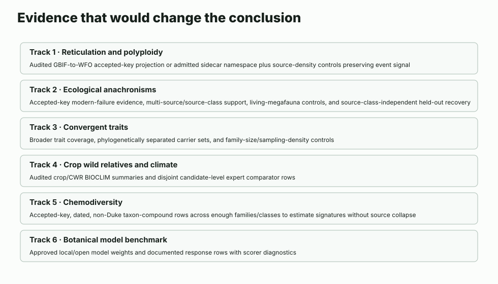

Select a theme to inspect status, evidence basis, limits, and next evidence needs.
Interactive study review
Follow plant evidence from names to conclusions.
This site explains how plant names, synonym handling, traits, crop relatives, chemistry records, and benchmark questions were linked to test six biological themes. The outcome is deliberately restrained: no cross-track prediction or speculation entries were promoted beyond table headers because the required validation predicates were not met.

Choose a track
Six paths through the same evidence substrate
Pick a theme to move from plain-language questions to expert controls and future evidence predicates.
What was found
Useful substrate, strong limits, no promoted biological predictions
The review surface indexes 60,000 accepted-name substrate records and exposes track-local instruments, evidence tables, and closure reasons. The strongest durable result is the auditability of what did not clear validation.



| Theme | Status | Key counts | Claim boundary |
|---|
Non-promotion boundary
Why the study did not promote prediction claims
A result was not promoted unless it had accepted-name support, an explicit validation source, and controls showing it was not an artifact of source density, family size, missing joins, crop popularity, or unavailable response evidence.
Observed evidence
Source-backed records were retained with provenance, caveats, and accepted-name status.
Candidate patterns
Track-local instruments could rank or organize cases, but rank alone was not treated as validation.
Promoted predictions
No cross-track entries reached this level because validation predicates failed or evidence remained incomplete.

Evidence explorer
Inspect source basis, accepted-name status, validation use, and rejection reason
Use the filters to review each theme without reading the underlying reports.
Methods for taxonomists
Accepted names were operational join keys, not final biological truth
The review separates taxonomy, phylogeny, reticulate inheritance, traits, distribution, human use, chemistry, media, and benchmark evidence. Each edge type declares what it can support, and unsupported inferences remain outside the promoted conclusion set.
Accepted-name handling
Accepted names anchor joins across sources while synonym conflicts and unresolved rows remain inspectable.
Evidence permissions
A chemistry detection supports detection, not clinical efficacy. An image supports media review, not distribution.
Validation philosophy
Each candidate needed an external validation predicate and a stated reason it could fail.
Study-level closure
Unpromoted rows are visible so reviewers can see exactly what evidence would be needed next.
Limitations
Different limits have different scientific meanings
The site distinguishes negative validation, true data limits, source bias, uncontrolled sidecar readiness, and untested benchmark status. These categories should not be collapsed.


Future evidence predicates
What would change the conclusion?
Each theme has a concrete evidence predicate. A future study should reopen a theme only when that predicate is satisfied by source-backed, accepted-name-aware evidence.
